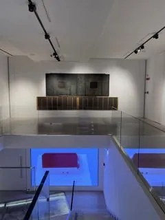

da ven 6 nov a mer 23 dic
La Fondazione Alberto Peruzzo riapre le porte di Sant’Agnese per la nuova stagione espositiva
Venerdì 6 novembre 2026, la Fondazione Alberto Peruzzo riapre ufficialmente le porte della propria sede espositiva nell’ex Chiesa di Sant’Agnese, accogliendo il pubblico con un nuovo percorso dedicato alle più recenti acquisizioni che arricchiscono la collezione di arte moderna…
 Indicazioni
Indicazioni
- Costi e prenotazioni
- Costo non indicato · Prenotazione non indicata
- Programma
- Programma da verificare. Apri la fonte ufficiale per orari e possibili aggiornamenti.
- In caso di maltempo
- Nessuna indicazione specifica pubblicata.
- Note
- Acquisito automaticamente dalla fonte.
L’EVENTO
Descrizione completa
Venerdì 6 novembre 2026, la Fondazione Alberto Peruzzo riapre ufficialmente le porte della propria sede espositiva nell’ex Chiesa di Sant’Agnese, accogliendo il pubblico con un nuovo percorso dedicato alle più recenti acquisizioni che arricchiscono la collezione di arte moderna e contemporanea.
Allestito negli spazi della Sacrestia, il percorso intreccia nuove acquisizioni e opere storiche della collezione. Dipinti e sculture di artisti come Afro Basaldella, Max Ernst, Marc Chagall, Giorgio de Chirico, Mimmo Paladino, Hermann Nitsch, Karel Appel, Arcangelo Sassolino, Alberto Garutti, Jannis Kounellis e Carl Andre restituiscono la ricchezza e l’evoluzione della raccolta. Tra le novità spicca Una tira l’altra di Giorgio Laveri, una scultura in ceramica smaltata che reinterpreta la forma di una ciliegia, affiancata da Form in an Estuary di Graham Sutherland, un dipinto a olio su tela che entra in dialogo con un’altra opera dell’artista già presente in collezione e, infine, l’ospite d’onore, Double Hone Sun, l’opera di Salvatore Scarpitta che arricchisce il percorso con la forza della sua presenza.
L’apertura segna l’avvio di una nuova stagione espositiva e rappresenta al contempo un’occasione per condividere la direzione intrapresa dalla Fondazione, sempre più orientata al consolidamento della propria identità istituzionale e allo sviluppo di un progetto culturale capace di ampliare il dialogo con il territorio e con il panorama artistico nazionale e internazionale.
Durante questo periodo, Spazio Sant’Agnese sarà visitabile dal giovedì al sabato, esclusivamente su prenotazione e nell’ambito di visite guidate della durata di circa 45 minuti che si svolgeranno alle ore 11:00, 13:00, 15:00 e 17:00. Sono inoltre previste aperture straordinarie il 29 novembre, l’8 dicembre e il 21, 22 e 23 dicembre. La prenotazione è obbligatoria e può essere effettuata tramite Eventbrite.
UNA COLLEZIONE IN CRESCITA, UNA VISIONE IN EVOLUZIONE
Fondata nel 2015 dall’imprenditore e collezionista Alberto Peruzzo, che ne è presidente, la Fondazione nasce dalla volontà di investire nella cultura attraverso iniziative che coniugano visione imprenditoriale e responsabilità culturale. La sua attività si concentra sulla valorizzazione e sul recupero del patrimonio architettonico e sulla promozione dell’arte moderna e contemporanea, attraverso la collezione e le iniziative a essa connesse.
Avviata negli anni ‘80 e in costante crescita, la collezione conta oggi quasi 200 opere. Frutto di una passione collezionistica maturata nel tempo e di un autentico spirito di mecenatismo, rappresenta uno strumento attraverso cui rendere l’arte accessibile al pubblico e favorire nuove occasioni di incontro, conoscenza e partecipazione.
In continuità con questo percorso di crescita e valorizzazione, la Fondazione guarda già alla primavera del 2027, quando presenterà la mostra con al centro le nuove acquisizioni di Anselm Kiefer, tra i protagonisti più significativi dell’arte contemporanea internazionale, proponendo al pubblico un confronto con figure centrali della ricerca artistica contemporanea.
La Fondazione si prepara ora a una nuova fase del proprio percorso. Al centro di questa evoluzione vi è l’ampliamento del dialogo con istituzioni, curatori, studiosi, artisti e pubblico, insieme al potenziamento delle attività di prestito, scambio e ricerca scientifica.
Un passaggio significativo sarà la costituzione del primo Comitato Scientifico, composto da autorevoli figure del panorama culturale nazionale e internazionale. Il Comitato contribuirà a rafforzare la ricerca scientifica e curatoriale della Fondazione, sostenendone lo sviluppo progettuale e la progressiva istituzionalizzazione.
PALAZZO LANZA: UN NUOVO POLO PER L’ARTE E LA CULTURA
In questa prospettiva si inserisce l’acquisizione di Palazzo Lanza, monumentale edificio ottocentesco che, a partire dalla fine del 2027, affiancherà la sede di Sant’Agnese. La scelta risponde alla necessità di ampliare gli spazi destinati alla collezione e, al tempo stesso, di sviluppare un programma di attività culturali ed espositive articolato, rivolto al territorio e aperto a collaborazioni nazionali e internazionali.
Con i suoi 2.500 metri quadrati, Palazzo Lanza si distingue per l’eleganza degli ambienti interni ed esterni e per gli affreschi di Giovanni Min.
L’edificio è attualmente interessato da un importante progetto di recupero e restauro, che ne consentirà la restituzione alla città e la valorizzazione come nuovo luogo di produzione e condivisione culturale.
Questo intervento si affianca al percorso di recupero e restauro iniziato con l’ex Chiesa di Sant’Agnese, reso possibile dall’investimento della Fondazione e recentemente insignito di una menzione speciale al Premio IN/ARCHITETTURA 2026 per il Triveneto.
Con Palazzo Lanza, la Fondazione Alberto Peruzzo intende compiere un ulteriore passo verso la realizzazione di un polo culturale capace di accogliere e valorizzare l’intera collezione, ampliando le opportunità di fruizione e partecipazione. Accanto alle esposizioni, il progetto prevede lo sviluppo di residenze per artisti, laboratori e workshop didattici, nonché la costruzione di sinergie con istituzioni culturali e università, a sostegno della ricerca scientifica e della diffusione della conoscenza.
L’apertura della nuova stagione a Sant’Agnese e il futuro ingresso di Palazzo Lanza delineano così un progetto unitario: rendere la collezione sempre più accessibile, promuovere la ricerca e la produzione culturale e consolidare il ruolo della Fondazione come punto di riferimento per l’arte moderna e contemporanea.
IL PROGRAMMA
Programma e orari
Appuntamenti raccolti dalle fonti elencate. Dove manca un orario, non è ancora disponibile in questa scheda.
Programma pubblicato
- Dal 2026-11-06 al 2026-12-23
INFORMAZIONI UTILI
Prima di partire
- Controllare la fonte prima di partire.
ORGANIZZAZIONE